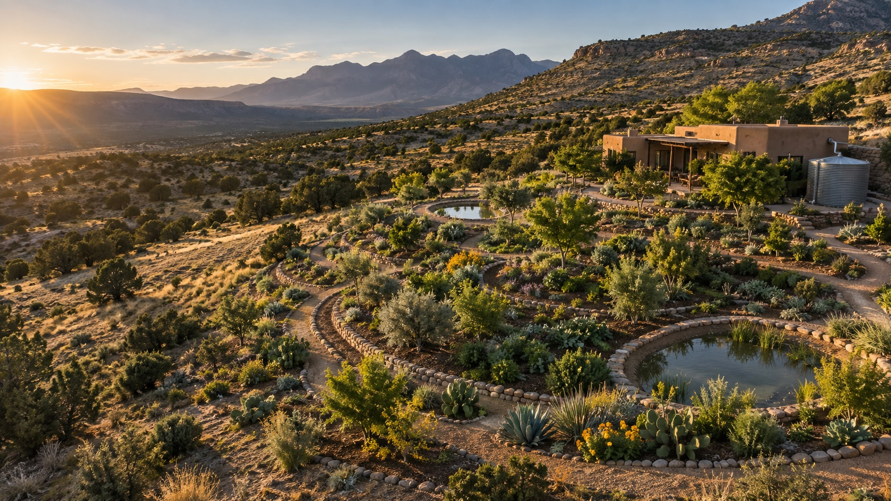

Land & water strategy
Read the site, define priorities, and shape a practical path toward a productive, water-wise landscape.
Permaculture designer · Strategist · Builder
I help people turn land, water, food, and big ideas into regenerative systems that work in the real world.

The practice
Between water and soil. People and place. Vision and execution. I work across those relationships to find the leverage points that make a system more resilient.
Read the site, define priorities, and shape a practical path toward a productive, water-wise landscape.
Turn an ambitious land, food, or community idea into a coherent model people can understand and execute.
Untangle complex decisions, align the moving parts, and build systems that can grow without losing their purpose.
Selected work
A nonprofit permaculture movement helping every home become a homestead—through landscape design, rainwater harvesting, education, and community programs.
Beyond the garden
Regeneration is the throughline, not the boundary. I’ve spent years building ventures, designing products, making art, curating music, and testing ideas in public.
About Jérémy
33.45° N
112.07° W
Phoenix, Arizona
My work is about making self-sufficiency practical—not as retreat from the world, but as a way to build stronger homes, neighborhoods, and communities.
I bring a systems designer’s eye to permaculture, organizations, and early-stage ideas: seeing connections, simplifying complexity, and helping the right next step become obvious.
Selected writing
Have a project in mind?
Select consulting engagements